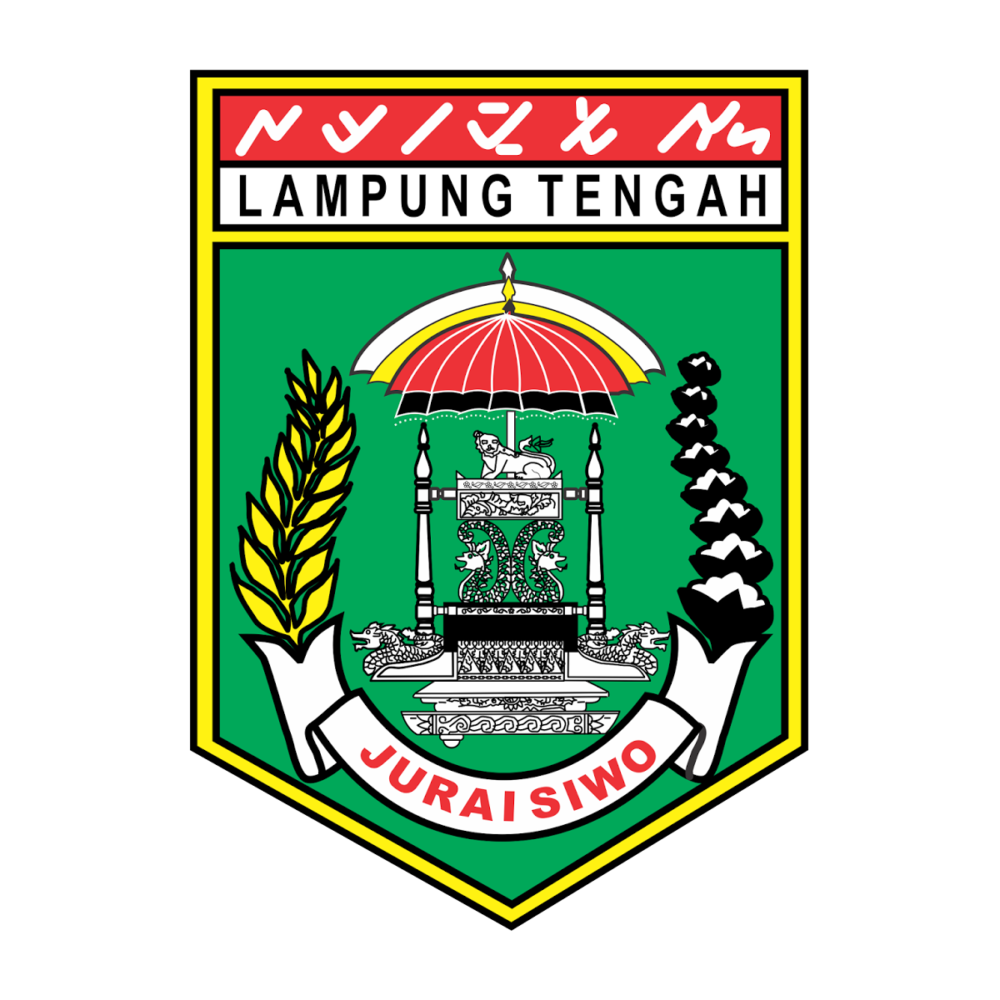
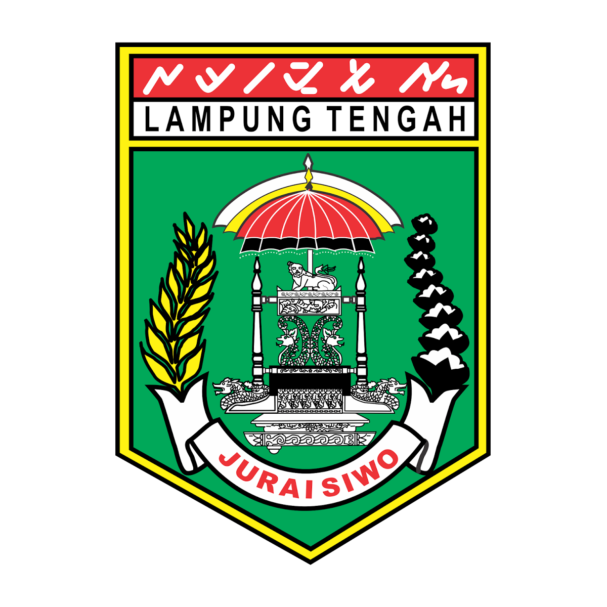
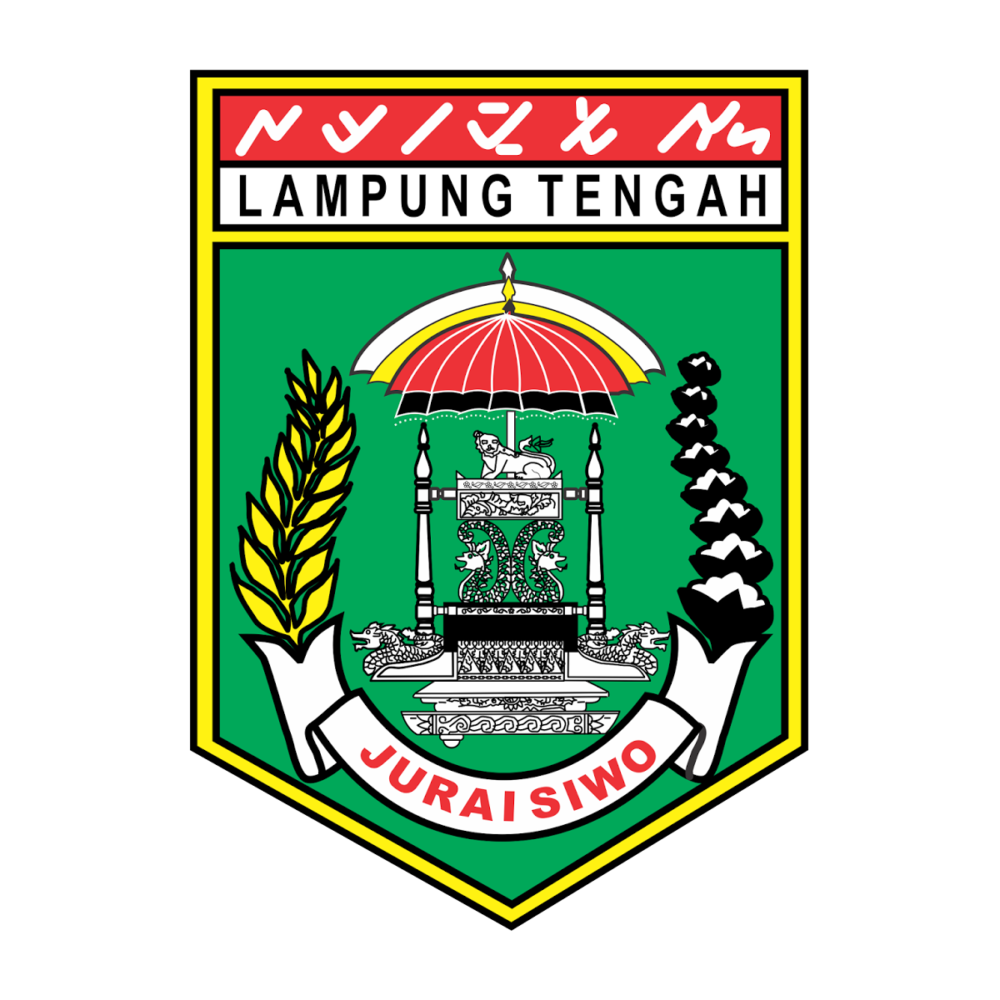
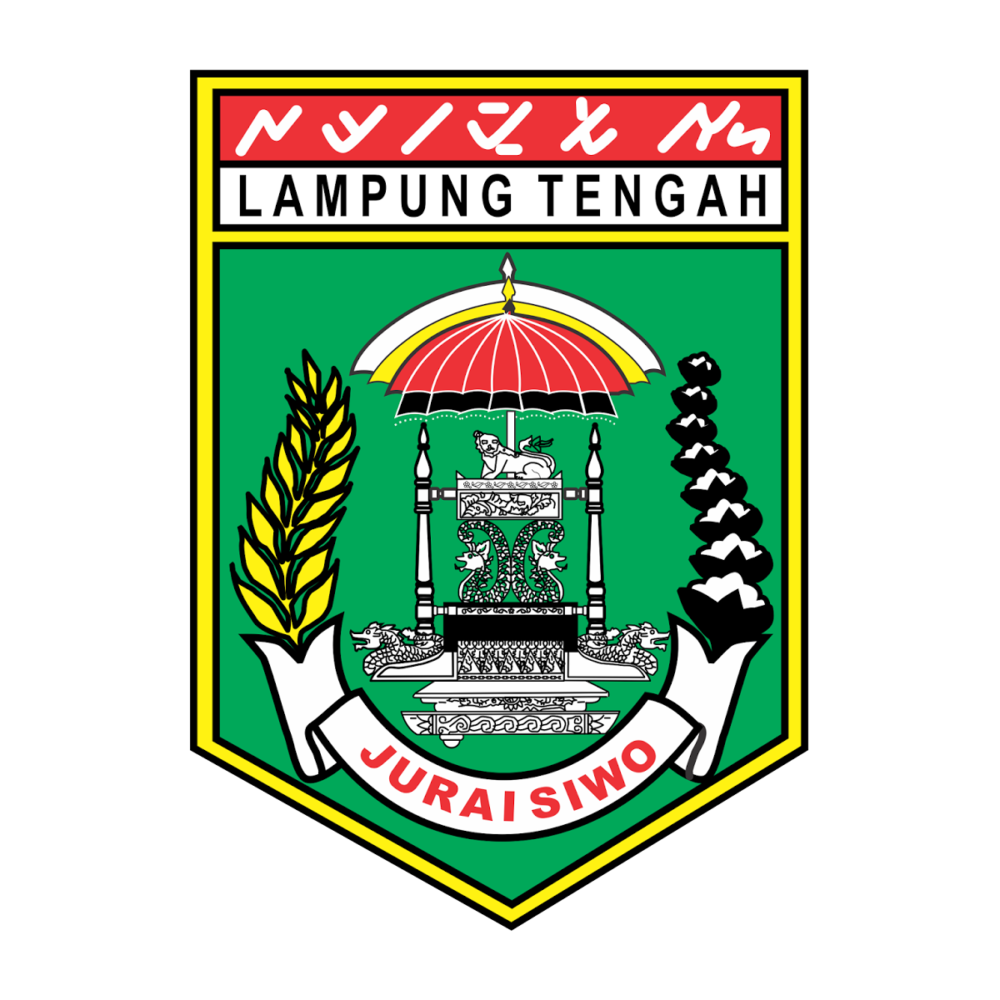

TANAMAN OBAT KELUARGA
 



Kingdom : Plantae
Divisio : Spermatophyta
Subdivisio : Angiospermae
Kelas : Dicotyledoneae
Ordo : Asterales
Famili : Asteraceae
Genus : Lactuca
Spesies : Lactuca sativa L
Menjaga hidrasi kulit
Mengoptimalkan kekuatan tulang
Mengoptimalkan penglihatan
Menurunkan kadar kolesterol
Membantu menurunkan berat badan
Menjaga kesehatan jantung
Menurunkan tekanan darah
Membuat kulit menjadi lebih kencang
Mengoptimalkan sistem imun tubuh
Mencegah kanker